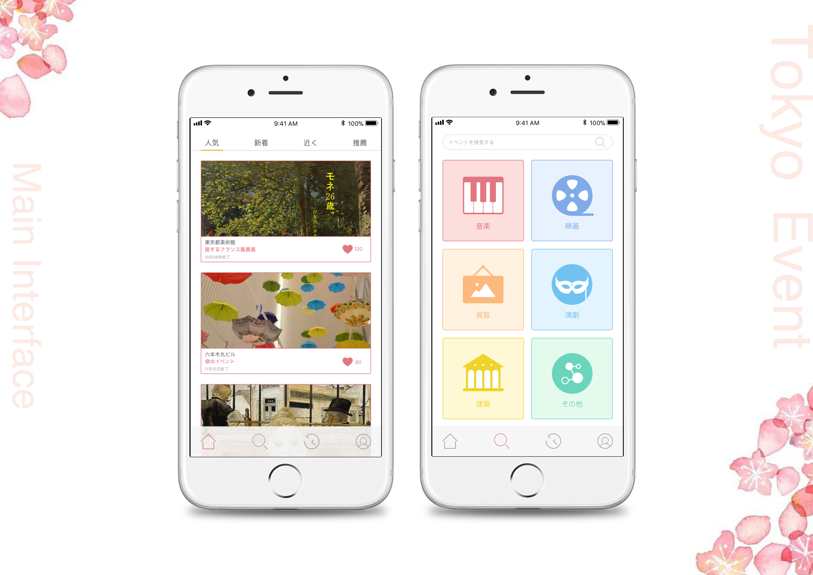

TokyoEvent
A event search app
| MY ROLES | DATE | TOOLS | PRACTICES |
|---|---|---|---|
| UI Designer | October 2018 | Sketch | UI Design |
| Visual Designer | Photoshop | Icon Design |

Tokyoevent is a concept app used to search for events in Tokyo. I have conceived this app and did the UI design.I can hone my visual design skills and learn the process by creating a mobile app UI library. A UI Library, also known as visual styles, or theme, is a custom graphical interface elements package that is applied to a particular app or website to create an elegant experience for the users.
One thing to be noticed is that this project was focusing on UI/Visual design which didn’t include UX design; for example, user research, comparable review, user journey mapping, information architecture etc.
UI Design
The problem addressed through my new app is the difficulty in searching for events . It is challenging for people like me who want to find interesting events that suit them.So I have listed some key features of the app below in order to create low-fidelity wireframes.
- Course list (sort by popular, nearby, upcoming, for you)
- Search (filter by category)
- History (for quick search)
- User Profile (event list)
I created mood boards to present the feelings targeting the user groups. It is lively, youthful which conveys passionate and positive moods. Then I made a style tile which helps to communicate a concrete visual language with stakeholders.
Style Guide
A style guide is a set of standards that establish and enforce style to improve communication. It unifies the design standard and significantly impacts the productivity of team.